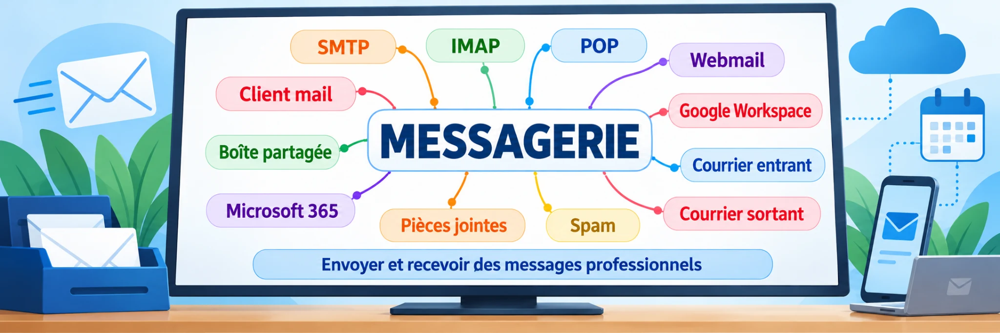

1. La messagerie dans une entreprise
Un courriel professionnel circule par des serveurs de messagerie. Le poste de l'expéditeur remet le message à son service de messagerie. Ce service trouve le serveur du domaine destinataire, notamment grâce au DNS et aux enregistrements MX, puis lui transmet le message.
Le trajet d'un courriel
Le mail passe entre les serveurs, jamais directement du PC de l'expéditeur au PC du destinataire. Les ports présentés sont les ports habituels de cet exemple.
Qui fait quoi ?
Le client de messagerie sert à rédiger, lire et classer les courriels. Le service de messagerie prend en charge la réception, le stockage et l'acheminement. Il peut être hébergé dans l'entreprise ou par un prestataire.
À retenir : on distingue l'adresse mail, la boîte sur le serveur, le logiciel utilisé et la configuration de chaque équipement.
Je me teste
Choisis une réponse pour chaque situation.
2. Les clients de messagerie
Un client de messagerie peut être Outlook, Thunderbird, l'application mail d'un smartphone ou un webmail accessible dans un navigateur. Une même adresse mail peut être utilisée sur plusieurs appareils. Il faut que le fournisseur autorise chaque méthode de connexion.
Le même compte, plusieurs configurations
Le logiciel peut conserver certains messages sur l'ordinateur ou sur le serveur. Il faut vérifier ses réglages. On doit donc vérifier la configuration effective de chaque appareil avant un dépannage ou une migration.
Et le webmail ?
Le webmail est une interface fournie par le service de messagerie. Les messages sont consultés via un navigateur, généralement en HTTPS, sans qu'il soit nécessaire de configurer POP3 ou IMAP dans ce navigateur.
Je me teste
Choisis une réponse pour chaque situation.
3. Envoyer les courriels : SMTP
SMTP sert à transmettre les courriels. Dans une configuration classique, un logiciel soumet le message au serveur d'envoi, puis les serveurs assurent son acheminement.
Client → serveur d'envoi : SMTP, port 587 (STARTTLS) Serveur → serveur : SMTP, port 25 Autre cas autorisé : port 465 (TLS implicite)
Le port 587 est courant pour la soumission authentifiée. Le port 25 sert principalement au transfert entre serveurs. Le chiffrement et l'authentification dépendent de la configuration du service.
Où se trouve le message envoyé ?
SMTP ne décide pas où conserver la copie du message envoyé. Le logiciel peut la garder localement ou la placer dans le dossier « Envoyés » du serveur. Avec un compte IMAP correctement configuré, ce dossier peut être synchronisé.
Attention : utiliser le compte personnel d'un salarié sur un appareil partagé peut exposer les envois à ce salarié ou interrompre le service lorsque le compte change.
Je me teste
Choisis une réponse pour chaque situation.
4. Recevoir les courriels : POP3
POP3 récupère les messages depuis le serveur vers le logiciel de messagerie. Les dossiers, les classements et les états de lecture ne sont pas synchronisés par POP3 entre les appareils.
POP3 : TCP 110 (possible avec STARTTLS selon service) POP3S : TCP 995 (TLS implicite)
Selon les réglages, le logiciel conserve ou supprime la copie sur le serveur après téléchargement. Il est donc faux de supposer que tous les courriels se trouvent toujours uniquement sur le PC.
Une boîte utilisée par plusieurs personnes
Avec POP3, chaque appareil peut télécharger ses copies et travailler indépendamment. Une suppression ou un classement sur un PC n'est pas automatiquement répercuté sur les autres.
Je me teste
Choisis une réponse pour chaque situation.
5. Consulter une boîte synchronisée : IMAP
Avec IMAP, les messages et les dossiers de la boîte sont conservés sur le serveur et leur état peut être synchronisé entre plusieurs appareils. Les logiciels peuvent aussi garder un cache local pour travailler plus rapidement.
IMAP : TCP 143 (STARTTLS possible) IMAPS : TCP 993 (TLS implicite)
Et les messages envoyés ?
Ils peuvent également être synchronisés. Après l'envoi par SMTP, le logiciel peut enregistrer une copie dans le dossier « Envoyés » du serveur IMAP. Les autres appareils retrouvent alors cette copie. Si le logiciel enregistre uniquement en local, les autres appareils ne la voient pas.
Le cas des configurations mixtes
Une même boîte peut être configurée en POP3 sur un ordinateur et en IMAP sur un autre. Les réglages de suppression sur le serveur, les dossiers locaux et les copies d'envoi peuvent alors entraîner des résultats différents.
Limite importante : IMAP synchronise les courriels, mais ne fournit pas à lui seul les calendriers partagés, les délégations ou l'administration d'une plateforme collaborative.
Je me teste
Choisis une réponse pour chaque situation.
6. Les plateformes collaboratives
Exchange Online dans Microsoft 365 et Google Workspace proposent une messagerie associée à d'autres services professionnels : calendriers, contacts, boîtes partagées, droits et délégations, selon l'offre choisie.
Les clients modernes utilisent notamment HTTPS et les interfaces du fournisseur. Pour les échanges de courriels entre serveurs, SMTP reste utilisé.
Pourquoi payer davantage qu'une boîte IMAP ?
Avec IMAP, on peut synchroniser les courriels reçus et envoyés. Microsoft 365 n'est donc pas nécessaire pour ce seul besoin. Les plateformes collaboratives apportent surtout des fonctions supplémentaires et des outils d'administration centralisés.
Un compte Exchange peut-il aussi utiliser IMAP ?
Oui, dans certaines configurations autorisées par le fournisseur et l'administrateur. Un compte Exchange ne signifie pas que tous les appareils sont configurés de la même façon.
Attention aux photocopieurs
Un appareil multifonction peut nécessiter une configuration SMTP spécifique. Éviter d'utiliser sans réflexion le compte personnel de l'accueil : les copies envoyées, les autorisations et l'accès aux documents confidentiels doivent être vérifiés. Préférer une solution d'envoi dédiée et autorisée par l'organisation.
Je me teste
Choisis une réponse pour chaque situation.
7. Choisir une offre de messagerie
Une entreprise ne choisit pas seulement un protocole. Elle achète un service : capacité de stockage, accès POP3 ou IMAP, webmail, sécurité, sauvegarde, assistance, administration et éventuellement outils collaboratifs.
Comparer les besoins
| Besoin | Messagerie hébergée simple | Plateforme collaborative |
|---|---|---|
| Courriels multi-appareils | Oui avec IMAP correctement configuré | Oui |
| Calendriers partagés intégrés | Selon services complémentaires | Généralement proposés |
| Gestion avancée des droits | Selon le fournisseur | Généralement proposée |
| Tarif | Souvent moins élevé | Variable selon les licences et services |
Évaluer le coût réel
Le prix affiché par utilisateur n'est pas le seul critère. Il faut aussi regarder l'espace disponible, la sauvegarde, l'assistance, la sécurité et le temps de travail nécessaire.
| Offre fictive | Prix par salarié / mois | Prix pour 20 salariés / mois | Prix annuel |
|---|---|---|---|
| Messagerie simple | 3 € | 60 € | 720 € |
| Plateforme collaborative | 12 € | 240 € | 2 880 € |
Ces montants servent uniquement à apprendre à comparer les coûts. Ce ne sont pas des tarifs commerciaux vérifiés.
Le prix supérieur peut être justifié si l'entreprise utilise réellement les fonctions incluses. Inversement, une boîte IMAP peut parfaitement convenir lorsque le besoin se limite à des courriels synchronisés.
Je me teste
Choisis une réponse pour chaque situation.
8. Diagnostic professionnel 🔧
Bonjour,
Notre technicien de maintenance change d’ordinateur. Il souhaite retrouver sa messagerie professionnelle et ses anciens courriels sur le nouveau PC.
L’ancien ordinateur fonctionne encore. Pouvez-vous préparer le transfert de sa messagerie ?
Merci.
Partie 1 : retrouver les informations
Choisis librement tes vérifications. Tu dois retrouver les paramètres du compte et l’emplacement des messages stockés sur l’ancien PC. Tu peux ensuite remplir la fiche de migration.
Fiche de migration à valider
Tu peux consulter les résultats de tes vérifications avant de répondre. Aucun mot de passe ne doit être écrit dans cette fiche.
Première mission accomplie !
Tu as terminé la recherche des paramètres. Tu peux t’arrêter avec cette réussite ou continuer avec la migration guidée.
Partie 2 : effectuer la migration
Cette partie est guidée. À chaque étape, choisis l’action appropriée. Une erreur ne retire pas ta réussite à la partie 1.
Bravo ! Migration réussie !
Tu as préparé la configuration, protégé les anciennes données et contrôlé l’envoi, la réception et les archives. Mission complète réussie.